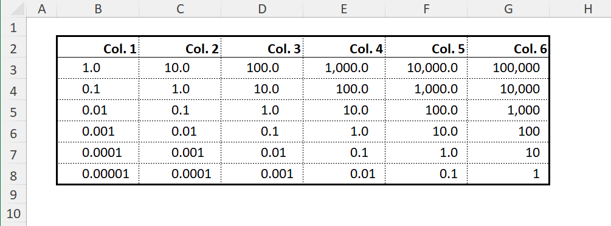
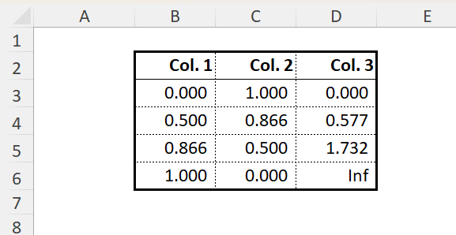
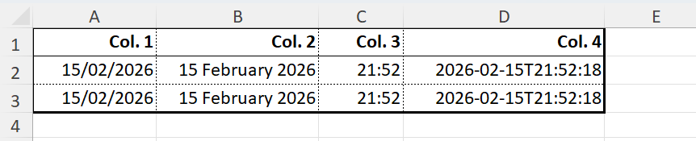
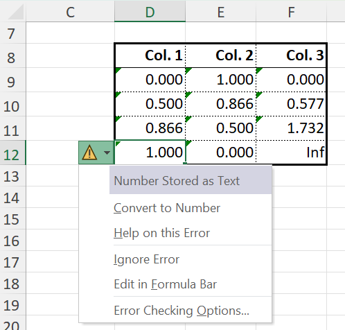
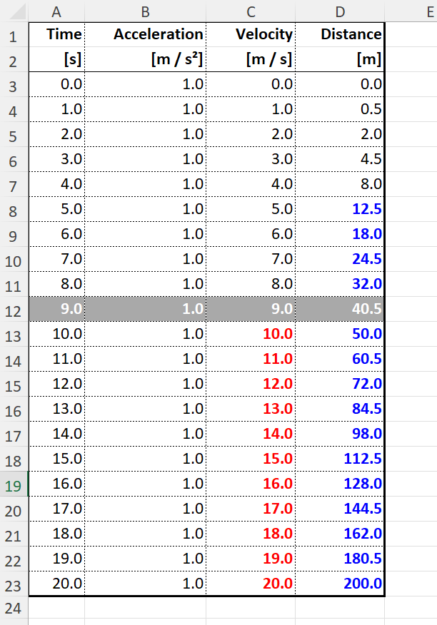
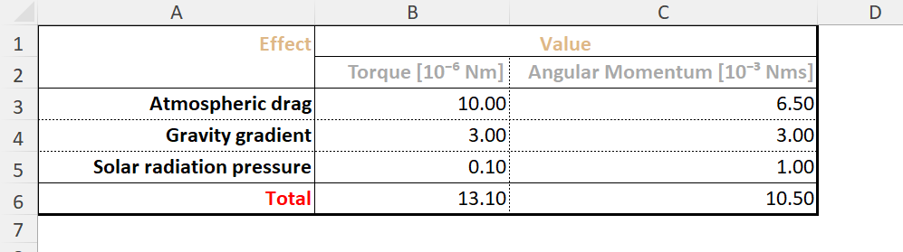
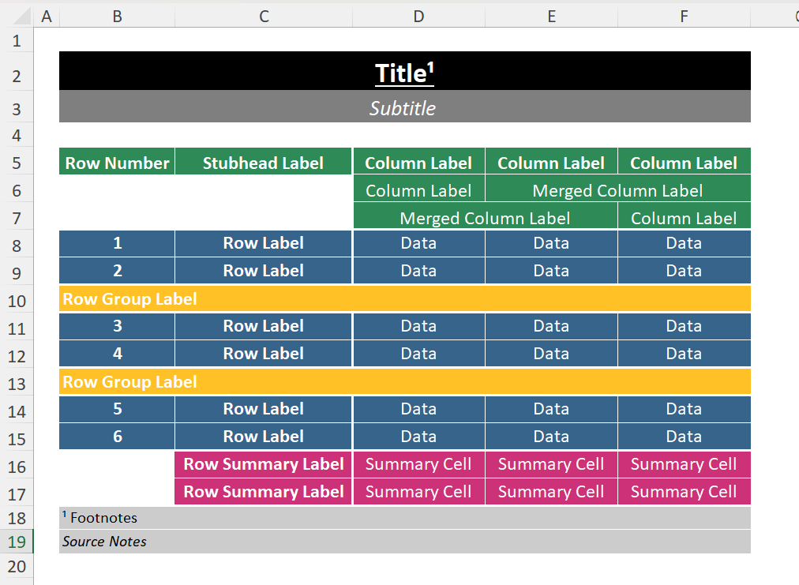
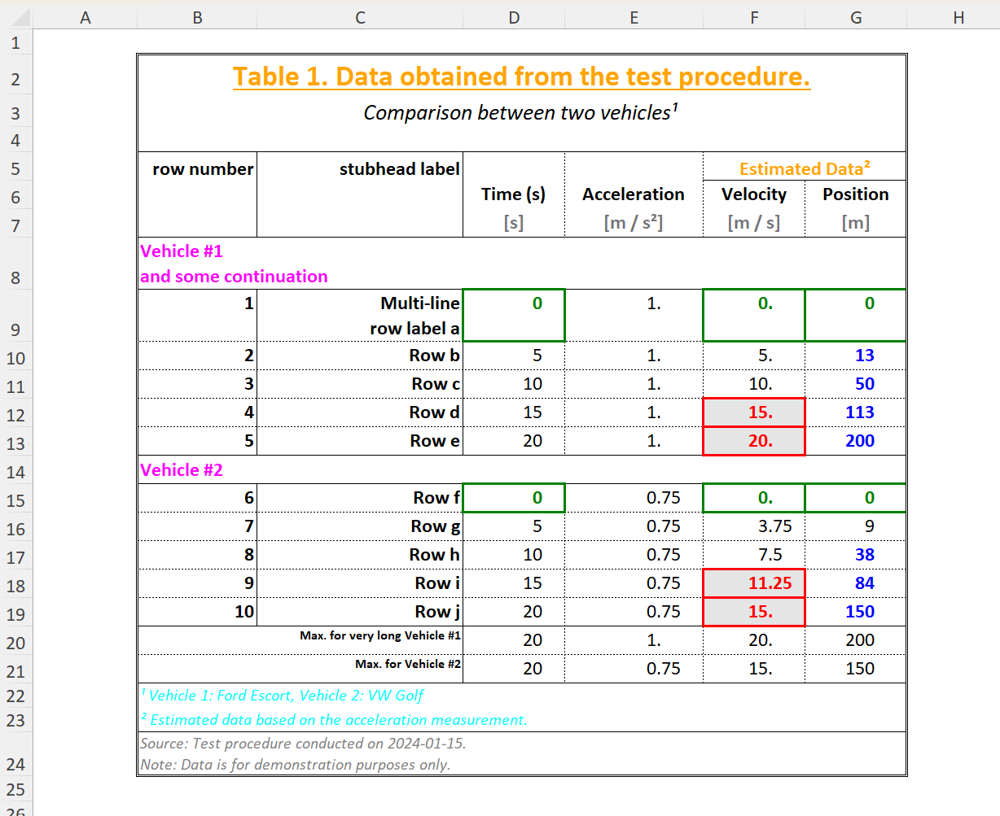

Excel Backend Examples
Here we show some examples produced by the Excel backend.
Excel Formatter
Native Excel formatting can straightforwardly be used to format the display format of table data without affecting the underlying values.
data = [10.0^(-i + j) for i in 1:6, j in 1:6]
f1 = ExcelFormatter((data, i, j) -> j==1, ["format" => "#,##0.0????_0"])
f2 = ExcelFormatter((data, i, j) -> j==2, ["format" => "#,##0.0???_0"])
f3 = ExcelFormatter((data, i, j) -> j==3, ["format" => "#,##0.0??_0"])
f4 = ExcelFormatter((data, i, j) -> j==4, ["format" => "#,##0.0?_0"])
f5 = ExcelFormatter((data, i, j) -> j==5, ["format" => "#,##0.0_0"])
f6 = ExcelFormatter((data, i, j) -> j==6, ["format" => "#,##0_0"])
f = pretty_table(
data,
anchor_cell = "B2";
table_format = ExcelTableFormat(data_column_width = 10.5),
excel_formatters = [f1, f2, f3, f4, f5, f6],
backend = :excel,
)

julia> data = [f(a) for a = 0:30:90, f in (sind, cosd, tand)]
4×3 Matrix{Float64}:
0.0 1.0 0.0
0.5 0.866025 0.57735
0.866025 0.5 1.73205
1.0 0.0 Inf
julia> f = pretty_table(data;
excel_formatters = [ExcelFormatter((v, i, j) -> true, ["format" => "0.000_);;@_)"])],
backend = :excel,
anchor_cell = "B2"
)
XLSXFile("blank.xlsx") containing 1 Worksheet
sheetname size range
-------------------------------------------------
prettytable 6x4 A1:D6
julia> writexlsx("mytest.xlsx", f, overwrite=true)
"C:\\Users\\...\\mytest.xlsx"
The calculated values of the trigonometric functions are written natively to Excel at full precision but the ExcelFormatter sets the Excel display format to only show three decimal places in the table.
When an Excel formatter is used, the printed width of cell data is determined by Excel based on the format specified. It cannot be known by PrettyTables. For this reason, most cell data values are not considered by the automatic determination of column widths, which therefore relies on the column headers only. However, if cells contain text (or are otherwise represnted as Strings), these are included in column width determination (text is less likely to be significantly impacted by Excel formatting - although this is not impossible).
If automatic determination of column widths is unsatisfactory, consider setting min and/or max width limits or fixing column widths entirely.
To illustrate the extent to which formatting affects width even of the same data, consider:
now = Dates.now()
matrix = [
now now now now
now now now now
]
result = pretty_table(
XLSX.XLSXFile,
matrix;
excel_formatters = [
ExcelFormatter((v, i, j) -> (j==1), ["format" => "ShortDate"])
ExcelFormatter((v, i, j) -> (j==2), ["format" => "d mmmm yyyy"])
ExcelFormatter((v, i, j) -> (j==3), ["format" => "hh:mm"])
ExcelFormatter((v, i, j) -> (j==4), ["format" => "yyyy-mm-dd\"T\"hh:mm:ss"])
],
table_format = ExcelTableFormat(data_column_width = [12.0, 16.0, 8.0, 20.0])
)
Predefined Formatters
Predefined formatters are intended for text output. They can be used straightforwardly with the :excel backend but convert cell data to formatted strings rather than passing the native values.
For example, using the same trig data table as above:
pretty_table(data;
formatters = [fmt__printf("%5.3f")],
backend = :excel,
filename = "prettytable.xlsx",
overwrite = true,
anchor_cell = "D8"
)
Excel generates a warning that numbers are represented as text. Clicking in such a cell and hitting enter causes Excel to convert the string to a number again, but the formatting is lost (eg, 1.000 => 1). Moreover, by converting to a string, the precision has been truncated to the length of the string. While not important for presentation purposes, if the table is used in Excel as input for further calculation, some information will have been lost.
Numbers passed via a predefined formatter are converted to a string representation and so will always be included in the column width determination.
An Excel formatter and a predefined formatter can readily be applied to the same cell, if useful. For example, the addition of
excel_formatters = [ExcelFormatter((v, i, j) -> true, ["format" => "@_0"])],in the above pretty_table specification would provide a right cell margin the width of one '0' character to the data in each cell, similar to the one included in the first example.
Excel Highlighters
julia> t = 0:1:20
0:1:20
julia> data = hcat(t, ones(length(t) ), t, 0.5.*t.^2);
julia> column_labels = [
["Time", "Acceleration", "Velocity", "Distance"],
[ "[s]", "[m / s²]", "[m / s]", "[m]"]
]
2-element Vector{Vector{String}}:
["Time", "Acceleration", "Velocity", "Distance"]
["[s]", "[m / s²]", "[m / s]", "[m]"]
julia> hl_p = ExcelHighlighter(
(data, i, j) -> (j == 4) && (data[i, j] > 9),
["color" => "blue", "bold" => "true"]
);
julia> hl_v = ExcelHighlighter(
(data, i, j) -> (j == 3) && (data[i, j] > 9),
["color" => "red", "bold" => "true"]
);
julia> hl_10 = ExcelHighlighter(
(data, i, j) -> (i == 10),
[:fill => ["pattern" => "solid", "fgColor" => "darkgray" ],
:font => [ "color" => "white", "bold" => "true" ]]
);
julia> style = ExcelTableStyle(first_line_column_label = ["color" => "yellow", "bold" => "true"]);
julia> f = pretty_table(
data;
column_labels = column_labels,
excel_formatters = [ExcelFormatter((v, i, j) -> true, ["format" => "#,##0.0"])],
style = style,
highlighters = [hl_10, hl_p, hl_v],
backend = :excel
)
XLSXFile("blank.xlsx") containing 1 Worksheet
sheetname size range
-------------------------------------------------
prettytable 23x4 A1:D23
julia> writexlsx("mytest.xlsx", f, overwrite=true)
"C:\\Users\\...\\mytest.xlsx"

Excel Table Style
julia> data = [
10.0 6.5
3.0 3.0
0.1 1.0
]
3×2 Matrix{Float64}:
10.0 6.5
3.0 3.0
0.1 1.0
julia> row_labels = [
"Atmospheric drag"
"Gravity gradient"
"Solar radiation pressure"
]
3-element Vector{String}:
"Atmospheric drag"
"Gravity gradient"
"Solar radiation pressure"
julia> column_labels = [
[MultiColumn(2, "Value", :c)],
[
"Torque [10⁻⁶ Nm]",
"Angular Momentum [10⁻³ Nms]"
]
]
2-element Vector{Vector}:
MultiColumn[MultiColumn(2, "Value", :c)]
["Torque [10⁻⁶ Nm]", "Angular Momentum [10⁻³ Nms]"]
julia> f=pretty_table(
data;
backend = :excel,
column_labels,
merge_column_label_cells = :auto,
row_labels,
stubhead_label = "Effect",
excel_formatters = [ExcelFormatter((v, i, j) -> true, ["format" => "Number"])],
style = ExcelTableStyle(;
first_line_merged_column_label = ["color" => "BurlyWood", "bold" => "true"],
column_label = ["color" => "DarkGrey"],
stubhead_label = ["color" => "BurlyWood", "bold" => "true"],
summary_row_label = ["color" => "red", "bold" => "true"]
),
summary_row_labels = ["Total"],
summary_rows = [(data, i) -> sum(data[:, i])],
)
XLSXFile("blank.xlsx") containing 1 Worksheet
sheetname size range
-------------------------------------------------
prettytable 6x3 A1:C6
julia> writexlsx("mytest.xlsx", f, overwrite=true)
"C:\\Users\\...\\mytest.xlsx"

Excel borders and fill
matrix = [
"Data" "Data" "Data"
"Data" "Data" "Data"
"Data" "Data" "Data"
"Data" "Data" "Data"
"Data" "Data" "Data"
"Data" "Data" "Data"
]
result = pretty_table(
XLSX.XLSXFile,
matrix,
anchor_cell = "B2";
title = "Title",
subtitle = "Subtitle",
stubhead_label = "Stubhead Label",
column_labels = [
["Column Label", "Column Label", "Column Label"],
["Column Label", MultiColumn(2, "Merged Column Label")],
[MultiColumn(2, "Merged Column Label"), "Column Label"],
],
merge_column_label_cells = :auto,
show_row_number_column = true,
row_number_column_label = "Row Number",
row_labels = fill("Row Label", 6),
row_group_labels = [3 => "Row Group Label", 5 => "Row Group Label"],
summary_row_labels = ["Row Summary Label", "Row Summary Label"],
summary_rows = [(data, i) -> "Summary Cell", (data, i) -> "Summary Cell"],
footnotes = [
(:title, 1, 1) => "Footnotes"
],
source_notes = "Source Notes",
alignment = :c,
row_label_column_alignment = :c,
row_number_column_alignment = :c,
table_format = ExcelTableFormat(
horizontal_line_at_beginning = false,
vertical_line_at_beginning = false,
vertical_line_after_data_columns = false,
borders = ExcelTableBorders(
top_line = ["style" => "thick", "color" => "white"],
header_line = ["style" => "thick", "color" => "white"],
merged_header_cell_line = ["style" => "thin", "color" => "white"],
middle_line = ["style" => "thin", "color" => "white"],
bottom_line = ["style" => "thick", "color" => "white"],
left_line = ["style" => "thick", "color" => "white"],
center_line = ["style" => "thin", "color" => "white"],
right_line = ["style" => "thick", "color" => "white"],
),
),
style = ExcelTableStyle(
title = ["color" => "white", "bold" => "true"],
subtitle = ["color" => "white", "italic" => "true"],
row_number_label = ["color" => "white", "bold" => "true"],
row_number = ["color" => "white"],
stubhead_label = ["color" => "white", "bold" => "true"],
row_label = ["color" => "white", "bold" => "true"],
row_group_label = ["color" => "white", "bold" => "true"],
first_line_column_label = ["color" => "white", "bold" => "true"],
column_label = ["color" => "white"],
first_line_merged_column_label = ["color" => "white", "bold" => "true"],
merged_column_label = ["color" => "white"],
table_cell = ["color" => "white"],
summary_row_label = ["color" => "white", "bold" => "true"],
summary_row_cell = ["color" => "white"],
source_note = ["color" => "black"],
),
fill = ExcelTableFill(
title = ["pattern" => "solid", "fgColor" => "black"],
subtitle = ["pattern" => "solid", "fgColor" => "grey50"],
row_number_label = ["pattern" => "solid", "fgColor" => "seagreen"],
row_number = ["pattern" => "solid", "fgColor" => "steelblue4"],
stubhead_label = ["pattern" => "solid", "fgColor" => "seagreen"],
row_label = ["pattern" => "solid", "fgColor" => "steelblue4"],
row_group_label = ["pattern" => "solid", "fgColor" => "goldenrod1"],
first_line_column_label = ["pattern" => "solid", "fgColor" => "seagreen"],
column_label = ["pattern" => "solid", "fgColor" => "seagreen"],
merged_column_label = ["pattern" => "solid", "fgColor" => "seagreen"],
table_cell = ["pattern" => "solid", "fgColor" => "steelblue4"],
summary_row_label = ["pattern" => "solid", "fgColor" => "violetred3"],
summary_row_cell = ["pattern" => "solid", "fgColor" => "violetred3"],
footnote = ["pattern" => "solid", "fgColor" => "grey80"],
source_note = ["pattern" => "solid", "fgColor" => "grey80"],
)
)
Putting it all together
# == Creating the Table ====================================================================
v1_t = 0:5:20
v1_a = ones(length(v1_t)) * 1.0
v1_v = @. 0 + v1_a * v1_t
v1_d = @. 0 + v1_a * v1_t^2 / 2
v2_t = 0:5:20
v2_a = ones(length(v2_t)) * 0.75
v2_v = @. 0 + v2_a * v2_t
v2_d = @. 0 + v2_a * v2_t^2 / 2
table = [
v1_t v1_a v1_v v1_d
v2_t v2_a v2_v v2_d
];
# == Configuring the Table =================================================================
title = "Table 1. Data obtained from the test procedure."
subtitle = "Comparison between two vehicles"
column_labels = [
[EmptyCells(2), MultiColumn(2, "Estimated Data")],
["Time (s)", "Acceleration", "Velocity", "Position"],
]
units = [
styled"{(foreground=gray):[s]}",
styled"{(foreground=gray):[m / s²]}",
styled"{(foreground=gray):[m / s]}",
styled"{(foreground=gray):[m]}",
]
push!(column_labels, units)
merge_column_label_cells = :auto
column_label_alignment = :c
show_row_number_column = true
row_number_column_label = "row number"
stubhead_label="stubhead label"
row_labels = ["Multi-line\nrow label a", "Row b", "Row c", "Row d", "Row e", "Row f", "Row g", "Row h", "Row i", "Row j"]
row_group_labels = [
1 => "Vehicle #1\nand some continuation",
6 => "Vehicle #2"
]
cell_alignment = [(data, i, j) -> :r]
summary_rows = [
(data, j) -> maximum(@views data[ 1:5, j]),
(data, j) -> maximum(@views data[6:10, j]),
]
summary_row_labels = [
"Max. for very long Vehicle #1",
"Max. for Vehicle #2",
]
footnotes = [
(:subtitle, 1, 1) => "Vehicle 1: Ford Escort, Vehicle 2: VW Golf"
(:column_label, 1, 3) => "Estimated data based on the acceleration measurement."
]
source_notes = "Source: Test procedure conducted on 2024-01-15.\nNote: Data is for demonstration purposes only."
excel_formatters = [
ExcelFormatter((v, i, j) -> (j==1), ["format" => "#,##0_0_0"])
ExcelFormatter((v, i, j) -> (j==2), ["format" => "#,##0.??_0_0"])
ExcelFormatter((v, i, j) -> (j==3), ["format" => "#,##0.???"])
ExcelFormatter((v, i, j) -> (j==4), ["format" => "0_0_0_0"])
]
highlighters = [
ExcelHighlighter((data, i, j) -> (j == 3) && (data[i, j] > 10), [
:font => [ "color" => "red", "bold" => "true"],
:fill => [ "pattern" => "solid", "fgColor" => "grey90"],
:border => ["style" => "thick", "color" => "red"],
]),
ExcelHighlighter((data, i, j) -> (data[i, j] ≈ 0.0), [
:font => [ "color" => "green", "bold" => "true"],
:border => ["style" => "thick", "color" => "green"],
]),
ExcelHighlighter((data, i, j) -> (j == 4) && (data[i, j] > 10),
[ "color" => "blue", "bold" => "true"]
)
]
table_format = ExcelTableFormat(
borders = ExcelTableBorders(
top_line = ["style" => "double"],
bottom_line = ["style" => "double"],
left_line = ["style" => "double"],
right_line = ["style" => "double"],
),
)
style = ExcelTableStyle(
column_label = ["bold" => "true"],
summary_row_label = ["size" => "8"],
first_line_merged_column_label = ["bold" => "true", "color" => "orange"],
footnote = ["italic" => "true", "color" => "cyan"],
row_group_label = ["bold" => "true", "color" => "magenta"],
subtitle = ["italic" => "true"],
title = ["bold" => "true", "color" => "orange", "size" => "18", "under" => "single"],
)
# == Printing the Table ====================================================================
pretty_table(
table;
title,
subtitle,
show_row_number_column,
row_number_column_label,
stubhead_label,
merge_column_label_cells,
column_label_alignment,
column_labels,
row_group_labels,
row_labels,
cell_alignment,
summary_row_labels,
summary_rows,
footnotes,
source_notes,
highlighters,
excel_formatters,
table_format,
style,
backend=:excel,
filename="prettytable.xlsx",
anchor_cell="B2",
overwrite=true
)